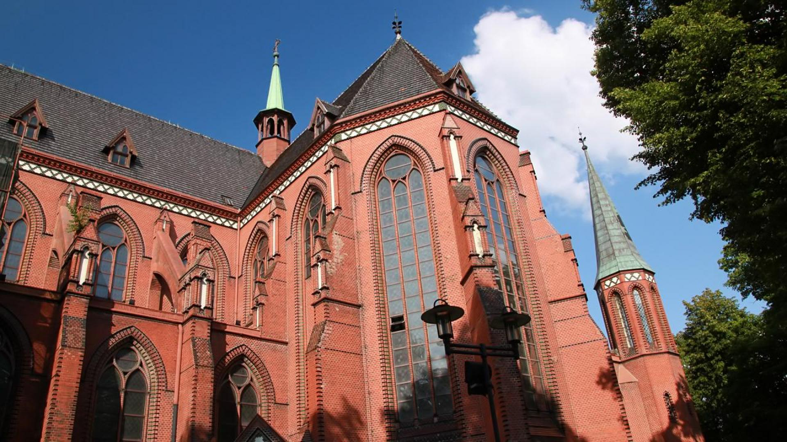

Katedra w Gliwicach
Historia
Katedra Świętych Apostołów Piotra i Pawłą w Gliwicach została wybudowana w latach 1896-1900. Autorem projektu był architekt Georg Kuczora, który zaprojektował w Gliwicach również m. in. budynek tzw. "Czerwonej chemii".
Na początku świątynia była przez krótki czas kościołem filialnym gliwickiej parafii Wszystkich Świętych. W 1908 roku nastąpiło erygowanie parafii pod wezwaniem św. Apostołów Piotra i Pawła, a jej pierwszym proboszczem został ksiądz prałat Józef Jagło.
Organy wybudował Kurzer z Gliwic w 1900 roku, posiadały 42 głosy. Przebudowała je austriacka firma Rieger w 1936 roku, powiększając je do 54 głosów. Organy obecnie są po kapitalnym remoncie przeprowadzonym w 2009 roku.
W 1992 roku papież Jan Paweł II erygował diecezję gliwicką, a kościół parafialny pod wezwaniem św. Apostołów Piotra i Pawła podniósł do godności kościoła katedralnego.
Wnętrze Katedry
- Ołtarz główny - wykonany przez Zakład Buhla z drzewa sosnowego zawiera
- obraz Świętych Apostołów Piotra i Pawła autorstwa Juliana Waldowskiego z Wrocławia,
- po bokach drewniane rzeźby św. Jadwigi Śląskiej i św. Elżbiety z Turyngii,
- powyżej rzeźbę św. Michała Archanioła
- postacie czterech adorujących aniołów
- tabernakulum zdobione złoconym okuciem
- Ołtarz boczny Najświętszej Marii Panny, wykonany przez Zakład Buhla zawiera:
- obraz przedstawiający Matkę Boską z Dzieciątkiem jako Królową Nieba, autorstwa Juliana Waldowskiego z Wrocławia,
- po bokach figury św. Józefa i św. Anny,
- powyżej figurę św. Alojzego,
- Ołtarz boczny Matki Boskiej Bolesnej ufundowany w 1910 r., a wykonany w Monachium, który zawiera relikwie św. Kandyda, św. Feliksa i św. Klemensji,
- Ołtarz boczny Matki Boskiej Częstochowskiej ufundowany w 1912 (jako akt za świętokradzką
zbrodnię) a wykonany w Monachium zawiera
- obraz zewnętrzny przedstawiający Boskiego Przyjaciela Dzieci,
- obraz wewnętrzny zawierający reliefy błog. Bronisławy i św. Notburgi,
- pod mensą ołtarza św. Stanisława Kostkę,
- Ambona, którą zdobią:
- reliefy przedstawiające Boskiego Zbawiciela i czterech Ewangelistów,
- figura św. Jerzego na daszku,
- Droga Krzyżowa - rzeźbiona w drewnie będąca dziełem C. Buhla z Wrocławia,
- Chrzcielnica wykonana z marmuru zawiera:
- rzeźbioną na drewnianym wieku scenę chrztu Pana Jezusa,
- w przedsionku kościoła znajduje się:
- rzeźba (ufundowana w 1927) przedstawiająca św. Antoniego Padewskiego, otoczonego ufnymi petentami, będąca dziełem znanego rzeźbiarza bytomskiego F. Schinka,
- witraż z 1911 r., obrazujący Baranka Bożego adorowanego przez unoszących się aniołów, wykonany w Monachium
- Witraże w prezbiterium wykonane w warsztacie A. Kliema z Raciborza (odrestaurowane w
1955/56),
przedstawiające:
- św. Barbarę, św. Jadwigę, świętych Piotra i Pawła oraz św. Wojciecha i św. Jacka Odrowąża,
- Organy wykonane przez firmę Ernesta Kurzera z Gliwic (1899)
- Dzwony na wieży kościelnej (1922):
- największy Święta Maria (ton h0) o wadze 3405 kg,
- średni Święty Józef (ton d1) o wadze 2010 kg,
- najmniejszy Święty Jerzy (ton e1) o wadze 943 kg.